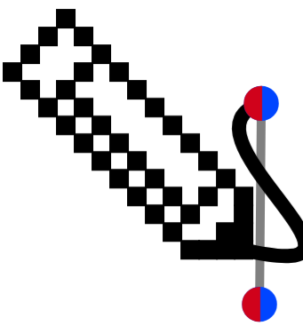

Create your own tessellation by drawing edges, applying
symmetry transformations, and then repeating your tile.
Quick Guide
Draw your edges.
Use the pancil

to free-draw up to half of the edges of the square.
You can draw a full edge (from a blue dot to a blue dot)
or a half edge (from a blue dot to a red dot)
Select your edges.
Using the select tool ,
select the edge(s) you have drawn and choose a symmetry transformation.
You can also delete the selected edge(s) using the erase button
Look for the red edges.
The edges where the chosen transformation can be applied
will be highlighted in red.
Choose a red edge.
Select one of the highlighted red edges.
Your previously selected edge will be copied according
to the chosen symmetry.
Repeat.
Continue drawing, selecting transformations, and choosing
red edges until all of the edges have been created.
Tessellate.
Click Tessellate to copy your tile and
reveal its immediate neighbouring tiles.
Decorate.
Once your tessellation is complete, decorate the interior
of the tile to create your final pattern ().
Tip:
First design the edges of the shape without thinking what it might be and when decorating decide what you think your shape looks like!
Experiment with different edge shapes and symmetry
transformations to discover different tessellations.